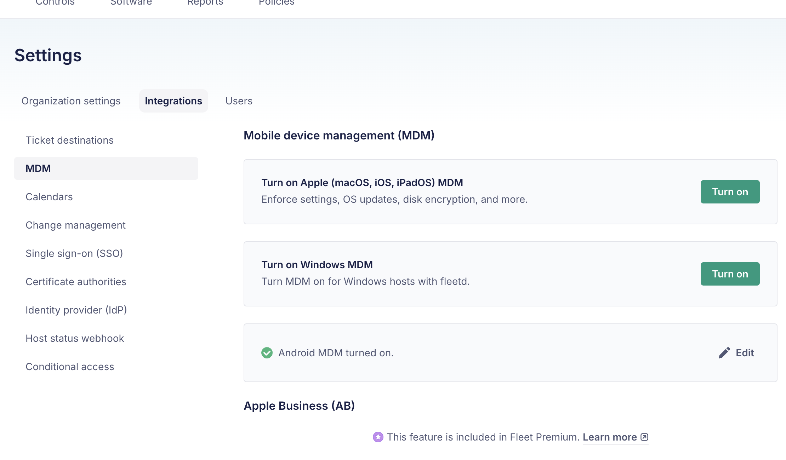
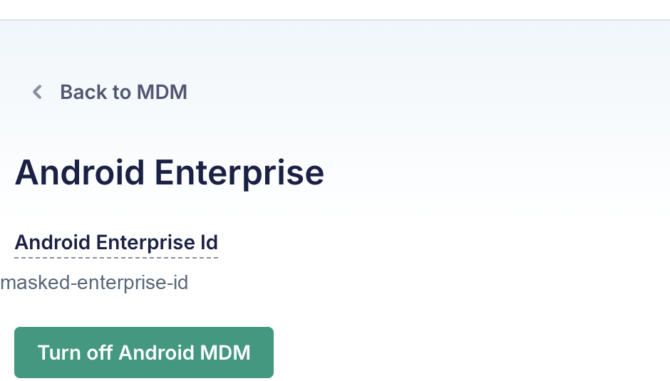
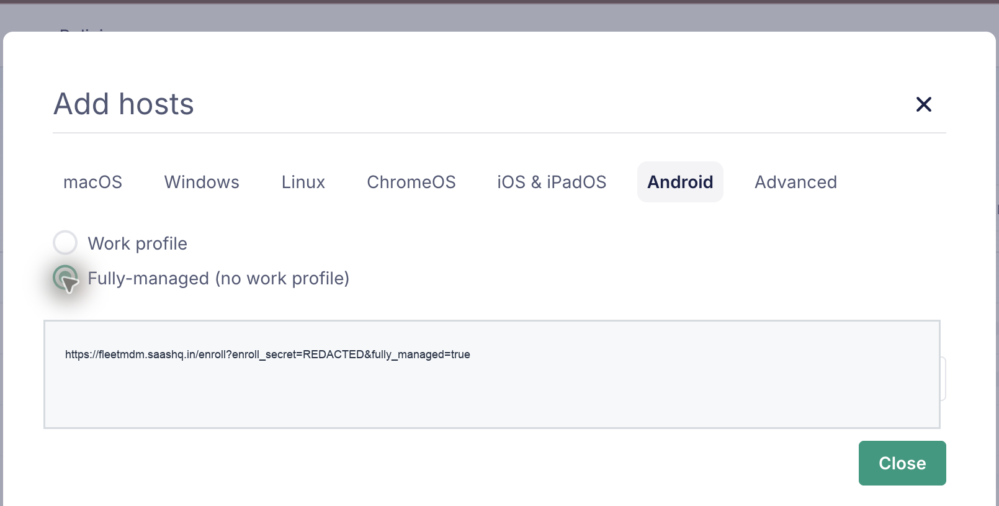

Fleet MDM on macOS M-Series
Date: 2026-06-24
Status: Verified locally
System: Fleet, Docker or OrbStack, Cloudflare Tunnel, Android Enterprise
Sensitive data: Masked
Goal
Run Fleet MDM on a macOS Apple Silicon machine and expose it at https://fleetmdm.saashq.in/ through Cloudflare Tunnel, without opening inbound ports or needing a public IP address.
The Android target is a family phone that should be enrolled as a fully managed Android Enterprise device after factory reset.
Final Configuration
- Host machine: macOS on Apple Silicon.
- Container runtime: Docker-compatible runtime. OrbStack was installed manually, but Docker Desktop also works if Docker is running.
- Fleet URL:
https://fleetmdm.saashq.in/. - Admin email:
admin@mdm.saashq.in. - Local Fleet folder:
/Users/<local-user>/Downloads/shastra/fleet-mdm. - Public access: Cloudflare Tunnel.
- Android mode: Android Enterprise, fully managed device mode.
Architecture
flowchart LR
A["Android phone setup screen"] --> B["https://fleetmdm.saashq.in"]
B --> C["Cloudflare Tunnel"]
C --> D["cloudflared container"]
D --> E["Fleet container :1337"]
E --> F["MySQL container"]
E --> G["Redis container"]
Cloudflare receives public HTTPS traffic and forwards it through the tunnel to the local Docker network. Fleet itself is bound to localhost on the Mac, and MySQL/Redis are not exposed publicly.
Prerequisites
- OrbStack or Docker Desktop is installed and running.
- Cloudflare manages DNS for
saashq.in. - Cloudflare Tunnel credentials exist on the machine under
~/.cloudflared. admin@mdm.saashq.incan receive email through Cloudflare Email Routing.- Android Enterprise binding is completed from Fleet.
Local Files
The Fleet deployment lives here:
Important files:
docker-compose.yml: starts Fleet, MySQL, Redis, and cloudflared..env: local Fleet/MySQL secrets and runtime settings. Do not publish this file..fleet-admin-password: local admin password record. Do not publish this file.cloudflared-fleetmdm-docker.yml: Cloudflare Tunnel ingress config used by the container.
Docker Services
The running stack contains:
fleet-mdm-cloudflared-1 cloudflared running
fleet-mdm-fleet-1 fleet running 127.0.0.1:1337->1337/tcp
fleet-mdm-mysql-1 mysql running 127.0.0.1:3306->3306/tcp
fleet-mdm-redis-1 redis running 127.0.0.1:6379->6379/tcp
The Fleet container uses fleetdm/fleet. MySQL and Redis are local container dependencies. The cloudflared container uses cloudflare/cloudflared:2026.6.1.
Sanitized Docker Compose Reference
Keep the real docker-compose.yml and .env files private, but record the shape of the stack so it can be recreated later.
services:
mysql:
image: mysql:8
platform: linux/x86_64
environment:
- MYSQL_ROOT_PASSWORD=${MYSQL_ROOT_PASSWORD}
- MYSQL_DATABASE=${MYSQL_DATABASE}
- MYSQL_USER=${MYSQL_USER}
- MYSQL_PASSWORD=${MYSQL_PASSWORD}
volumes:
- mysql:/var/lib/mysql
ports:
- "127.0.0.1:3306:3306"
restart: unless-stopped
redis:
image: redis:6
command: ["redis-server", "--appendonly", "yes"]
volumes:
- redis:/data
ports:
- "127.0.0.1:6379:6379"
restart: unless-stopped
fleet:
image: fleetdm/fleet
platform: linux/x86_64
depends_on:
mysql:
condition: service_healthy
redis:
condition: service_healthy
command: sh -c "/usr/bin/fleet prepare db --no-prompt && /usr/bin/fleet serve"
environment:
- FLEET_REDIS_ADDRESS=redis:6379
- FLEET_MYSQL_ADDRESS=mysql:3306
- FLEET_MYSQL_DATABASE=${MYSQL_DATABASE}
- FLEET_MYSQL_USERNAME=${MYSQL_USER}
- FLEET_MYSQL_PASSWORD=${MYSQL_PASSWORD}
- FLEET_SERVER_ADDRESS=${FLEET_SERVER_ADDRESS}:${FLEET_SERVER_PORT}
- FLEET_SERVER_TLS=${FLEET_SERVER_TLS}
- FLEET_SERVER_PRIVATE_KEY=${FLEET_SERVER_PRIVATE_KEY}
ports:
- "127.0.0.1:${FLEET_SERVER_PORT}:${FLEET_SERVER_PORT}"
restart: unless-stopped
cloudflared:
image: cloudflare/cloudflared:2026.6.1
depends_on:
fleet:
condition: service_healthy
command:
- tunnel
- --no-autoupdate
- --config
- /etc/cloudflared/config.yml
- run
- <cloudflare-tunnel-id>
volumes:
- ./cloudflared-fleetmdm-docker.yml:/etc/cloudflared/config.yml:ro
- /Users/<local-user>/.cloudflared:/etc/cloudflared:ro
restart: unless-stopped
volumes:
mysql:
redis:
data:
logs:
vulndb:
Do not paste .env values into the documentation. It is enough to document the variable names and where they are used.
Cloudflare Tunnel
The tunnel ingress maps the public hostname to Fleet inside the Docker network:
This is why the public URL works even though the Mac does not expose Fleet directly to the internet.
Start Or Restart
From the Fleet deployment folder:
If OrbStack or Docker is not running, start it first and then run the commands again.
Android Enterprise Binding
Android Enterprise binding must be completed before Android phones can be enrolled. The correct sequence is:
- In Fleet, open the MDM integrations page.
- Start the Android Enterprise connection from that page.
- Complete the Google Android Enterprise signup and binding flow.
- Return to Fleet and confirm Android MDM is turned on.
- Open the Android Enterprise detail page only if you need to view the enterprise binding or turn Android MDM off.
Start in Fleet:
Before binding, this page has the Android MDM action to connect Android Enterprise. After binding, the same page shows Android MDM turned on.

When the Android MDM action is selected, Fleet opens Google's Android Enterprise signup flow. In this setup, admin@mdm.saashq.in was used as the work email. The Google flow may include email verification, account details, free Android Enterprise subscription confirmation, password setup, and an Allow or Allow and create account step that binds the Android Enterprise account back to Fleet.
After Google's flow redirects back to Fleet, confirm the result here:
The Android Enterprise detail page is not the starting point for setup. It is the post-binding management page that appears after Android MDM is already turned on. Open it from the Android MDM row by selecting Edit.

This page shows the Android Enterprise binding ID and the Turn off Android MDM action. The enterprise ID is masked in the screenshot.
Android Enrollment
Enroll Android hosts only after Android MDM is turned on. In Fleet, go to:
This is the Android tab in the Add hosts dialog:

Fleet offers two Android enrollment options:
Work profile: useful when a personal phone keeps personal data separate from managed work apps.Fully-managed (no work profile): useful when the whole device should be managed by MDM.
For the family phone use case, choose Fully-managed (no work profile).
The enrollment URL is masked because it contains an enrollment secret.
Phone Setup Flow
Use this only after intentionally factory resetting the Android phone.
- Turn on the phone after factory reset.
- On the first welcome screen, tap the screen 6 times.
- Scan the Fleet Android enrollment QR code.
- Connect to Wi-Fi when prompted.
- Follow Android setup instructions until Fleet enrollment completes.
- Confirm the device appears under Fleet hosts.
Verification Commands
Run these from the Mac:
cd /Users/<local-user>/Downloads/shastra/fleet-mdm
docker compose ps
curl -s -o /dev/null -w 'local_health=%{http_code}\n' http://127.0.0.1:1337/healthz
curl -s -o /dev/null -w 'public_root=%{http_code}\n' -L https://fleetmdm.saashq.in/
Verified result on 2026-06-24:
Troubleshooting
If https://fleetmdm.saashq.in/ does not load:
- Confirm OrbStack or Docker is running.
- Run
docker compose psand check thatfleet,mysql,redis, andcloudflaredare running. - Check tunnel logs with
docker compose logs --tail=100 cloudflared. - Check Fleet logs with
docker compose logs --tail=100 fleet.
If Android Enterprise setup shows a Google robot or unusual-activity page:
- Complete the browser step manually from the same Chrome session.
- Check the email inbox for
admin@mdm.saashq.in. - Return to Fleet and confirm Android Enterprise is enabled.
If the Android QR enrollment fails:
- Regenerate or reopen the Fleet enrollment instructions.
- Make sure
Fully-managed (no work profile)is selected. - Make sure the phone is at the fresh factory setup screen.
- Make sure the phone can reach the internet during setup.
Security Notes
- Do not publish
.env,.fleet-admin-password, Cloudflare tunnel credentials, or enrollment URLs. - Treat the Fleet Android enrollment URL like a secret.
- Keep MySQL and Redis bound to localhost only.
- Prefer Cloudflare Tunnel over exposing Fleet directly from the Mac.
- Document each policy change after the first Android device enrolls.
Next Steps
- Enroll the Android phone after factory reset.
- Confirm the phone appears in Fleet.
- Record which restrictions Fleet exposes for that exact Android/HyperOS version.
- Test remote lock, wipe, and recovery behavior before relying on it.
References
- Fleet Android MDM setup: Fleet's setup sequence for connecting Android Enterprise and confirming Android MDM is turned on.
- Android Enterprise management: Android Enterprise management overview from Google.